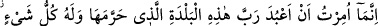

91. (De ki:) Ben ancak, bu şehrin (Mekke’nin) Rabbine -ki O burayı dokunulmaz
kılmıştır- kulluk etmekle emrolundum. Her şey de zaten O’na âiddir. Bana
müslümanlardan olmam emredildi.
“(De ki:) Ben ancak, bu şehrin (Mekke’nin) Rabbine -ki O burayı dokunulmaz
kılmıştır- kulluk etmekle emrolundum.”
“
” kendini hakir ve küçük görmenin son merhalesidir. “
” sâkinlerinin
toplanması ve orada ikameti ile üzerinde eserler beliren sınırları belli mekandır.
Burada belde/şehir ile Mekke-i Muazzama kasdedilmiştir. Allah’ın devesi, Allah’ın
evi, Allah ayı Receb gibi izafetin oraya tahsisi, onu şereflendirmek ve şânını ta’zim
içindir.
et-Tekmile’de der ki: “Allah bütün beldelerin Rabbi olduğu halde özellikle Mekke
beldesinin zikredilmesi, müşriklerin Allah’ın verdiği nimetin kadrini ve değerini
bilmeleri içindir. Onlara düşen, O’na ibâdet etmeleridir. Çünkü, beldelerini harem kılan
O’dur.”
“
” bir şeyi haram kılmak, yasak etmek demektir. Allah Teâlâ’nın onu
haram/dokunulmaz kıldığını dile getirmek, onu tekrar tekrar yüceltmektir. Bunun mânâsı,
dikenini koparmak, ağacını kesmek, otunu yolmak, avını ürkütmek ve orada herhangi bir
yolla bid’at çıkarmak sûretiyle o beldenin hürmetini ihlal etmenin haram kılınmasıdır.
Bir hadîste şöyle buyrulmuştur: “Mekke’yi insanlar değil, Allah haram/dokunulmaz
kılmıştır.”[80] Yâni onun haram kılınması, semâvî bir emir ile Allah tarafındandır, yoksa
şer’î bir ictihad ile insanlar tarafından değildir. Rasûlullah (s.a.)’in: “Mekke’yi
İbrâhim (a.s.) haram/dokunulmaz kıldı.”[81] hadîsine gelince; onun mânâsı, İbrâhim
(a.s.) sâbit olan haramlığı açıkladı veya duâ etti ve Allah da ebedî olarak orayı haram
kıldı, demektir.
Âyetin mânâsı ise şöyledir: Ey Muhammed! Kavmine de ki: “Allah tarafından, ibâdet
ve kulluğu sadece O’na tahsis etmekle ve O’na ortak koşmamakla emrolundum. Siz de
O’na ibâdet edin. Şeref ve izzetiniz bundadır. Beldenizi haram/dokunulmaz kılmakla
size nimeti sâbit olduğu halde O’na ortak koşmayın.
Bazıları: “Ubûdiyet/kulluk, peygamberlerin ve velîlerin elbisesidir.” demiştir.
“Her şey de” yaratma, mülkiyet ve tasarruf bakımından “zâten O’na” özel olarak bu
beldenin Rabbi’ne “âiddir.” Bu hususların hiçbirinde kimse O’na ortak olmaz. Allah
bütün mevcûdâtın genelinin Rabbi olduğu halde Mekke’nin tek başına izâfette yer
alması, onun yüceliğine dikkat çekmek içindir.
Yaratması/san’atı cümle cihanı süsledi